Project 4 — CS280A
Image Warping and Mosaicing
Shoot overlapping photos, recover the homographies between them, warp them with my own inverse warping, and blend them into mosaics, both planar and cylindrical.
Part A: Image Warping and Mosaicing
A.1 Shoot the Pictures
All photos were taken on my phone, close together in time, with roughly 40–70% overlap between neighbors. For each set I tried to keep the camera in one spot and only rotate it. The middle photo of each set is the reference that the others are warped into.
Mosaic 1: Gateway (3 photos)
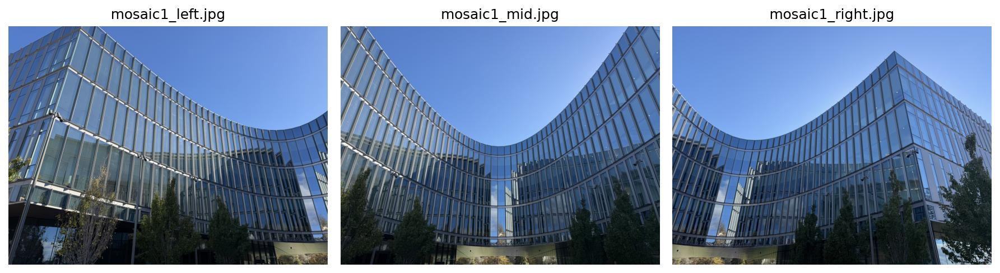
Mosaic 2: shop window (3 photos)
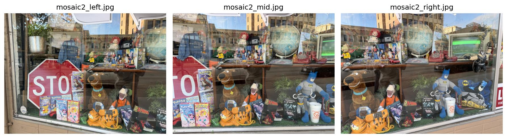
Mosaic 3: apartment (2 photos)
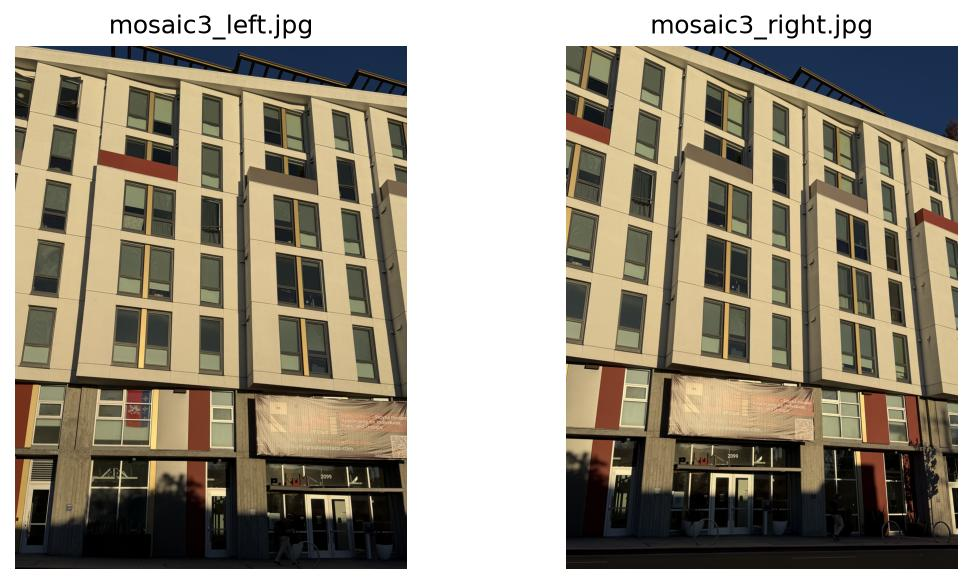
Rectification photos
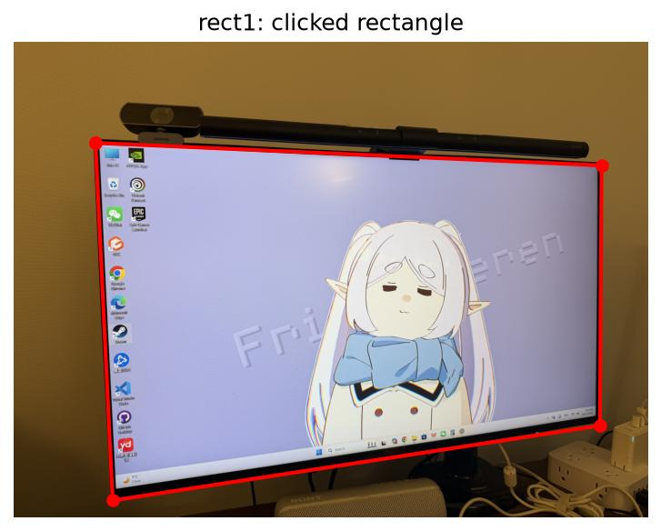
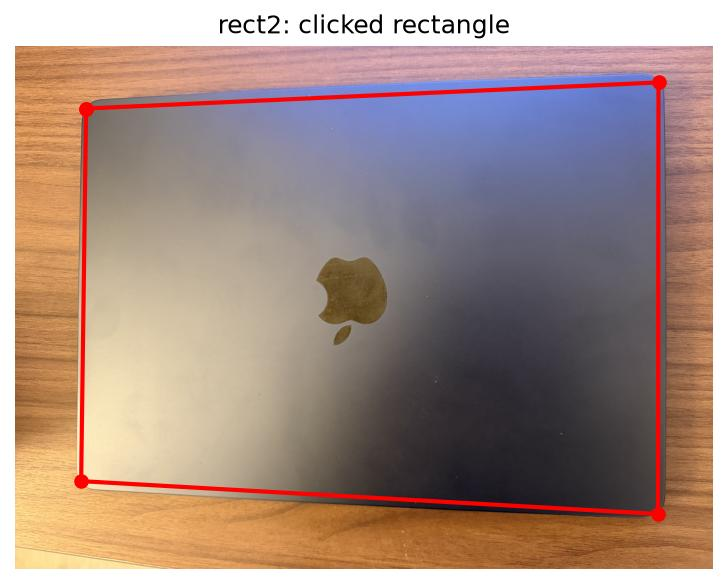
A.2 Recover Homographies
I clicked 8 correspondences per image pair with plt.ginput, choosing sharp corners (window frames, sign
edges) spread over the overlap region. The clicks are saved to JSON so later runs reuse them. Below are the points for mosaic 1, left
image → reference.
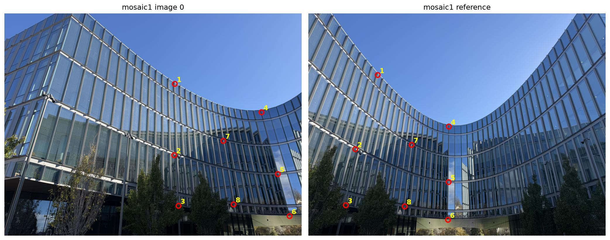
System of equations
computeH(im1_pts, im2_pts) fixes the lower-right entry of H to 1, leaving 8 unknowns. Each correspondence
(x, y) → (u, v) gives two linear equations:
[ 0 0 0 x y 1 −vx −vy ] · h = v
h = (h11, h12, h13, h21, h22, h23, h31, h32)
Stacking all 8 points gives an over-determined 16 × 8 system Ah = b, which I solve by least squares
(np.linalg.lstsq). Here is the actual system for the mosaic 1 pair above:
| x | y | 1 | x | y | 1 | −ux / −vx | −uy / −vy | b |
|---|---|---|---|---|---|---|---|---|
| 687.2 | 285 | 1 | 0 | 0 | 0 | −192080.1 | −79656.8 | 279.5 |
| 0 | 0 | 0 | 687.2 | 285 | 1 | −171139.5 | −70972.6 | 249.1 |
| 684.8 | 573.5 | 1 | 0 | 0 | 0 | −129539.3 | −108473.7 | 189.2 |
| 0 | 0 | 0 | 684.8 | 573.5 | 1 | −376079.2 | −314921.4 | 549.1 |
| 702.2 | 778.6 | 1 | 0 | 0 | 0 | −105976.6 | −117496.5 | 150.9 |
| 0 | 0 | 0 | 702.2 | 778.6 | 1 | −545096.4 | −604349.3 | 776.2 |
| 1037.1 | 399.7 | 1 | 0 | 0 | 0 | −587891.4 | −226566.6 | 566.9 |
| 0 | 0 | 0 | 1037.1 | 399.7 | 1 | −474577.6 | −182896.8 | 457.6 |
| 1103.1 | 649.9 | 1 | 0 | 0 | 0 | −624051.6 | −367684.9 | 565.7 |
| 0 | 0 | 0 | 1103.1 | 649.9 | 1 | −752758.7 | −443517.8 | 682.4 |
| 1150.6 | 820.3 | 1 | 0 | 0 | 0 | −648259.4 | −462138 | 563.4 |
| 0 | 0 | 0 | 1150.6 | 820.3 | 1 | −961155.4 | −685198.6 | 835.3 |
| 883 | 515.5 | 1 | 0 | 0 | 0 | −367536.9 | −214593.9 | 416.2 |
| 0 | 0 | 0 | 883 | 515.5 | 1 | −469535.4 | −274147.8 | 531.8 |
| 924.7 | 772.8 | 1 | 0 | 0 | 0 | −359185.7 | −300173 | 388.4 |
| 0 | 0 | 0 | 924.7 | 772.8 | 1 | −722066.3 | −603433.8 | 780.9 |
Recovered homography
| 2.095742 | −0.521916 | −827.085544 |
| 0.903139 | 1.63526 | −672.845623 |
| 0.001035 | −0.000174 | 1 |
Mapping the 8 clicked points through H lands them on their partners with a mean error of 1.63 px (max 2.94 px). Fits for all five pairs:
| Pair | Mean | Max |
|---|---|---|
| mosaic 1, left → middle | 1.63 px | 2.94 px |
| mosaic 1, right → middle | 4.50 px | 8.85 px |
| mosaic 2, left → middle | 3.60 px | 6.04 px |
| mosaic 2, right → middle | 2.75 px | 6.45 px |
| mosaic 3, left → right | 4.13 px | 8.39 px |
A.3 Warp the Images
Both warpImageNearestNeighbor(im, H) and warpImageBilinear(im, H) use inverse warping. I
first push the four image corners through H to get the output bounding box. Then, for every output pixel, I map it back into the
source image with H−1 and sample there, so the output has no holes. Pixels that land outside the source get alpha = 0.
Pixel (0, 0) is treated as the center of the top-left pixel. The two functions differ only in how they sample:
- Nearest neighbor rounds the source location to the closest pixel.
- Bilinear takes a weighted average of the four surrounding pixels, weighted by how close the location is to each.
Both are written from scratch in NumPy, with no cv2/skimage warping or griddata.
Rectification
I clicked the four corners of a known rectangle (top-left, top-right, bottom-right, bottom-left) and mapped them to an axis-aligned rectangle with the object's real width / height ratio: 1.746 for the monitor screen, 1.423 for the laptop lid. The output keeps the rectangle plus a margin around it.
Rectification 1: monitor
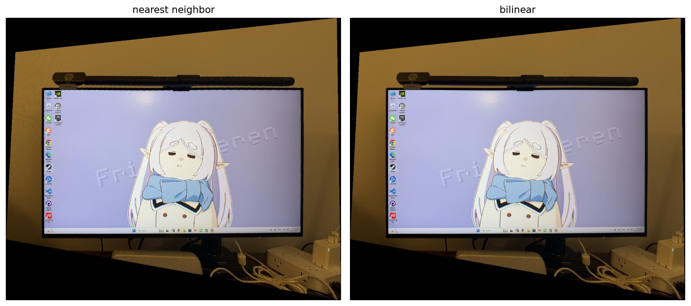
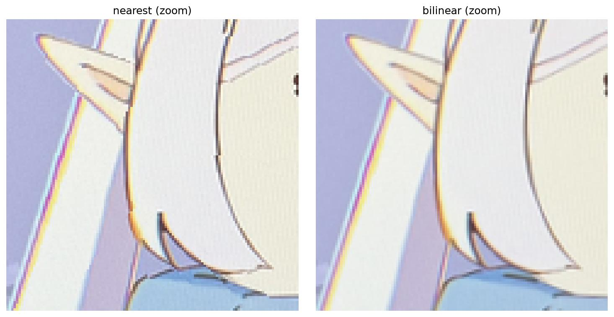
Rectification 2: laptop lid
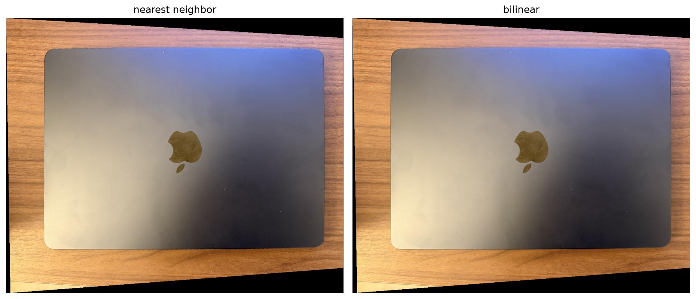
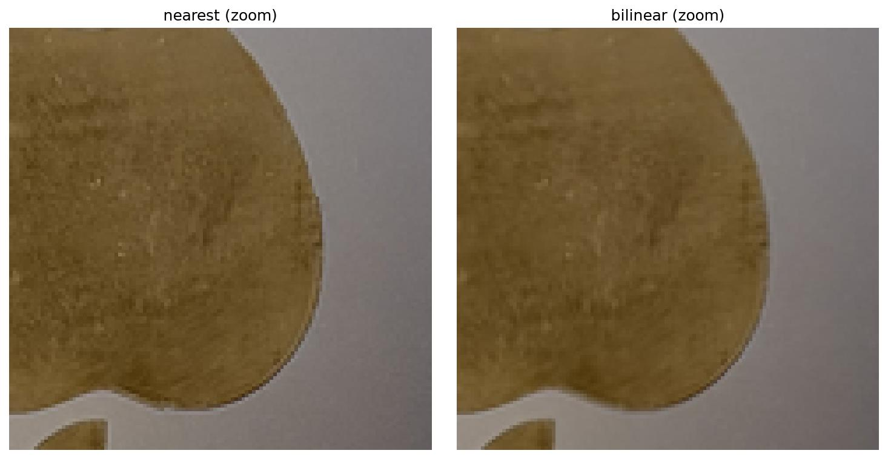
| Image | Nearest | Bilinear |
|---|---|---|
| monitor | 0.07 s | 0.17 s |
| laptop lid | 0.07 s | 0.16 s |
Nearest neighbor vs bilinear
- Quality: at full size the two look nearly the same, but the zoomed crops show the difference. Nearest neighbor gives stair-stepped, jagged edges: the outline of the hair and ear on the monitor, and the curve of the Apple logo. Bilinear gives smooth edges, at the cost of being slightly softer.
- Speed: nearest neighbor does one lookup per pixel, while bilinear does four lookups plus blending, so it is about 2.4× slower here (0.17 s vs 0.07 s). That is still fast enough, so I use bilinear for every mosaic.
A.4 Blend the Images into a Mosaic
Procedure
- Register: the middle photo is the reference and stays unwarped. Each other photo gets its homography to the reference from A.2.
- Canvas: I push every photo's four corners through its homography. The union of those bounding boxes is the mosaic canvas, so all photos are inverse-warped (bilinear) straight onto the same canvas at once.
- Weights: each photo carries a feather weight that is 1 at its center and falls linearly to 0 at its border. The weight is warped along with the photo as an extra channel.
- Blend (2-level Laplacian pyramid): I split every warped photo into a low-frequency band (Gaussian blur) and a high-frequency band (photo minus blur). The low bands are averaged using the feather weights. The high bands are taken only from the photo with the largest weight at each pixel. The two bands are then added back together.
Mosaic 1: curved glass building
Mosaic 2: shop window
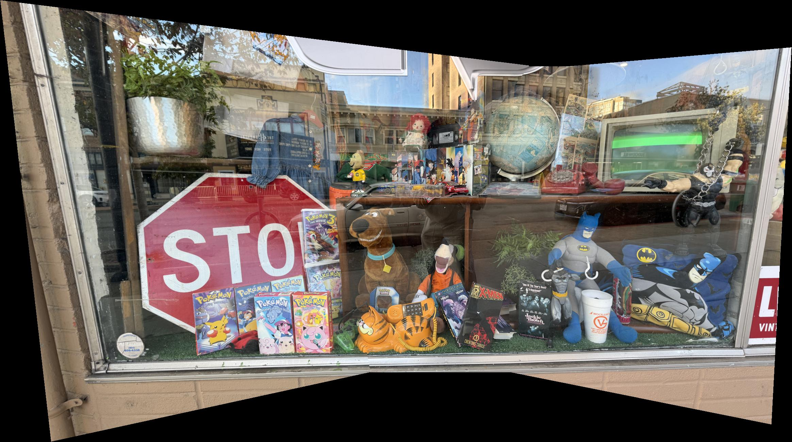
Mosaic 3: apartment building
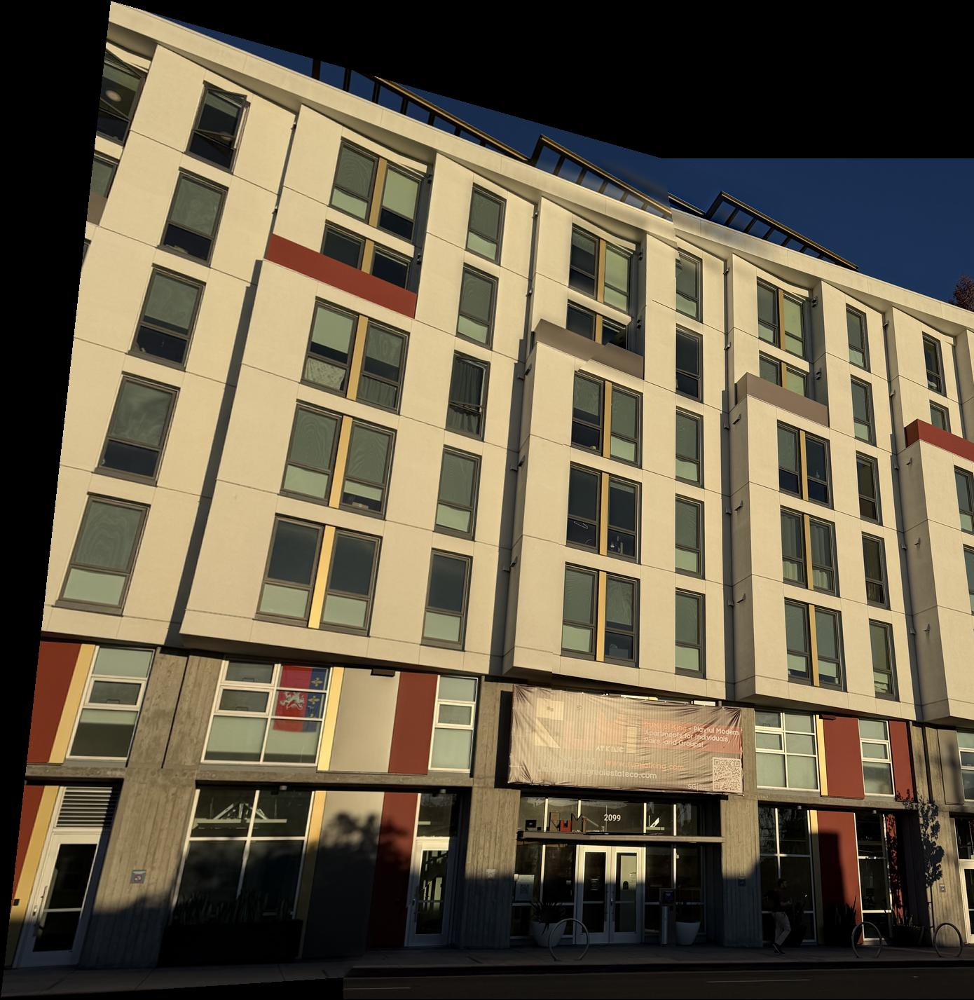
Reducing edge artifacts
To show what the blending fixes, I compare it with a naive version that simply averages the photos wherever they overlap:
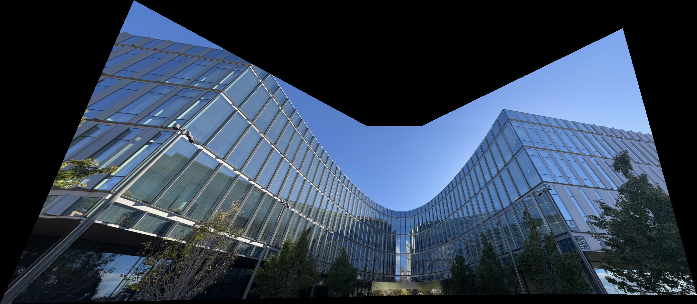
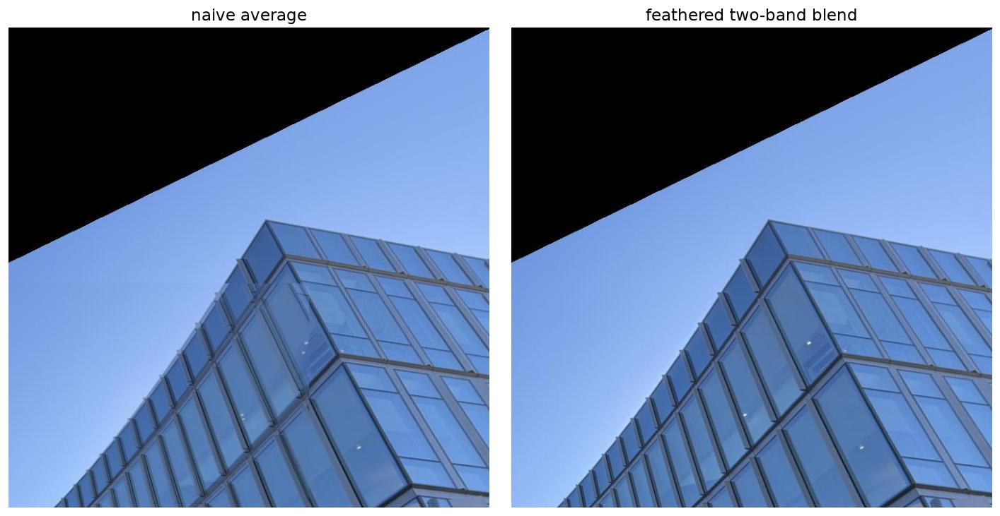
What the blending fixes
- Hard seams: in the naive mosaic, the border of the right photo shows up as a straight line across the sky, because its exposure differs slightly from the reference. The feather weights fall to 0 at every photo's border, so no border can appear as a sharp line.
- Ghosting: averaging two slightly misregistered photos doubles every edge. In the zoom you can see the doubled window frames on the left. Taking the high-frequency band from only one photo keeps a single sharp copy of each edge.
- Exposure differences: averaging only the blurred low band over the wide feathered overlap spreads the brightness change out smoothly instead of leaving a visible step.
A.5 · B&W Cylindrical Mapping
Instead of warping onto the reference photo's plane, I project every photo onto a cylinder around the camera, with radius equal to the focal length in pixels. Each cylinder image is made by inverse sampling (bilinear) straight from the original photo, so nothing is resampled twice.
My photos are hand-held and tilted up at the buildings, so a plain left–right shift on the cylinder could not line them up. Instead I estimate each camera's full 3D rotation relative to the reference from the same clicked correspondences (a least-squares best-fit rotation between the two sets of viewing rays). Every photo is then sampled onto one shared cylinder and blended exactly as in A.4.
Mosaic 1: planar vs cylindrical
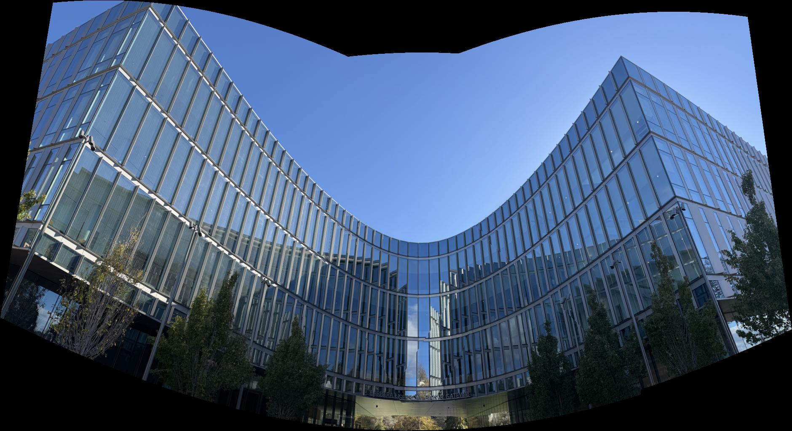
Mosaic 2: planar vs cylindrical
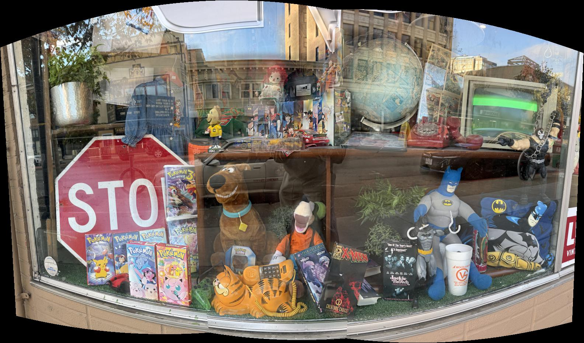
Mosaic 3: planar vs cylindrical
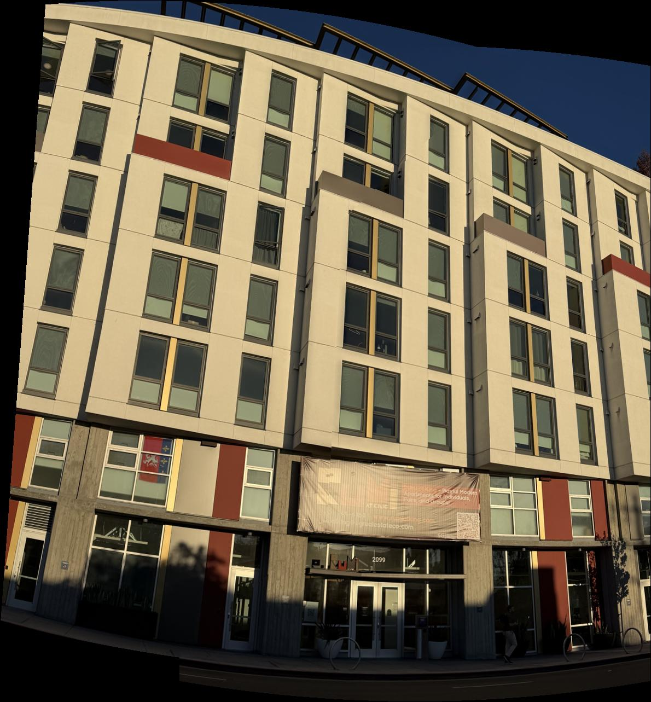
Choosing the focal length
I take the focal length from each photo's EXIF data (its 35 mm-equivalent focal length, converted to pixels). To check that this radius looks right, I swept f from 0.5× to 2× that value and measured how badly the clicked points disagree after rotation-only alignment:
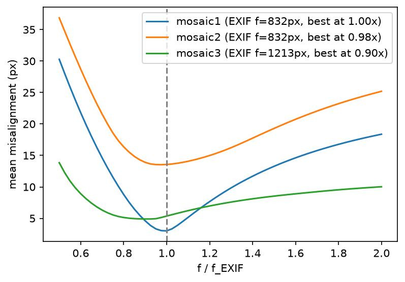
Observations
- The EXIF focal length is a good radius: the curves bottom out at 1.00× (mosaic 1), 0.98× (mosaic 2) and 0.90× (mosaic 3) of the EXIF value. A smaller f over-bends the photos, while a larger f flattens them toward the planar result.
- Planar vs cylindrical: the planar mosaics stretch the outer photos into big wedges (see the left and right ends of mosaic 1). On the cylinder every photo keeps a similar size, so the result is more compact and the outer parts are not blown up. Straight horizontal lines curve instead, which is the trade-off of the cylinder.
- Mosaic 2 is the limitation: its points still disagree by 12–15 px after the best rotation (vs 1.6–5 px for the other sets), and the cylindrical version shows ghosting. I moved sideways along the shop window between shots, so the photos are not related by a pure rotation. The planar mosaic still works because the window is nearly flat, and a homography is exact for a flat scene even when the camera moves.